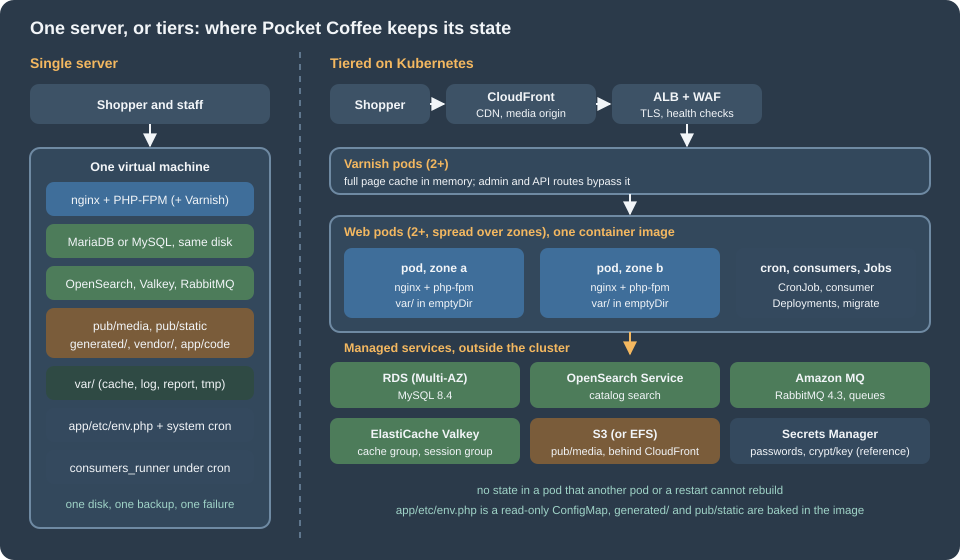
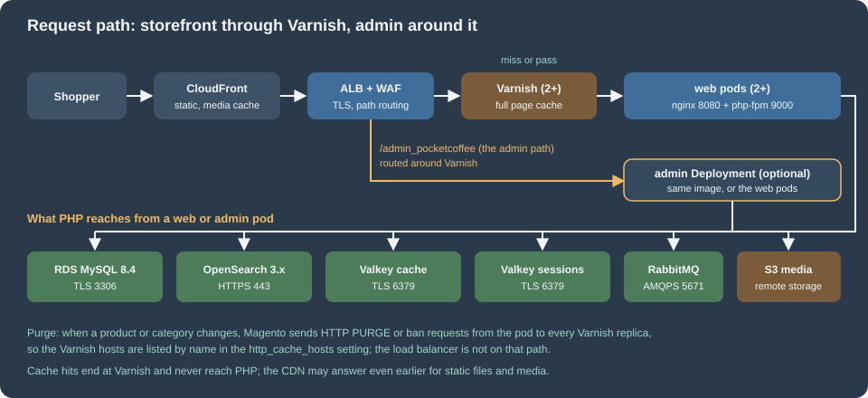
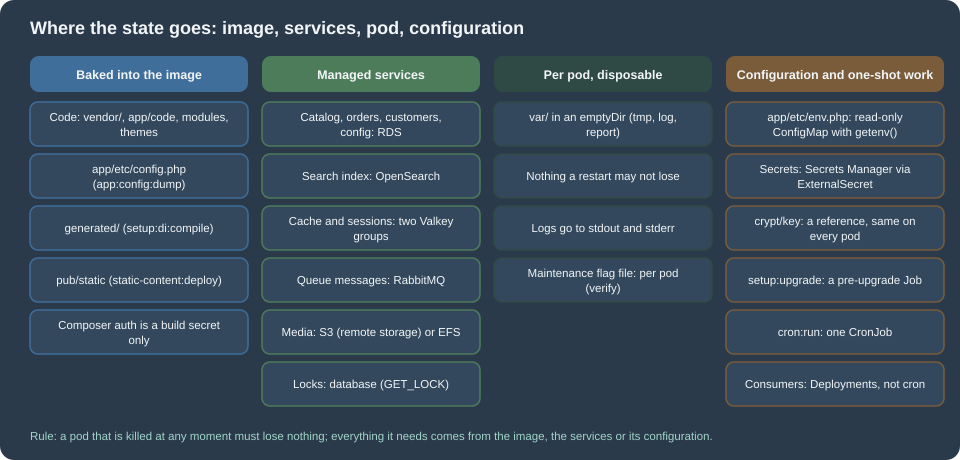
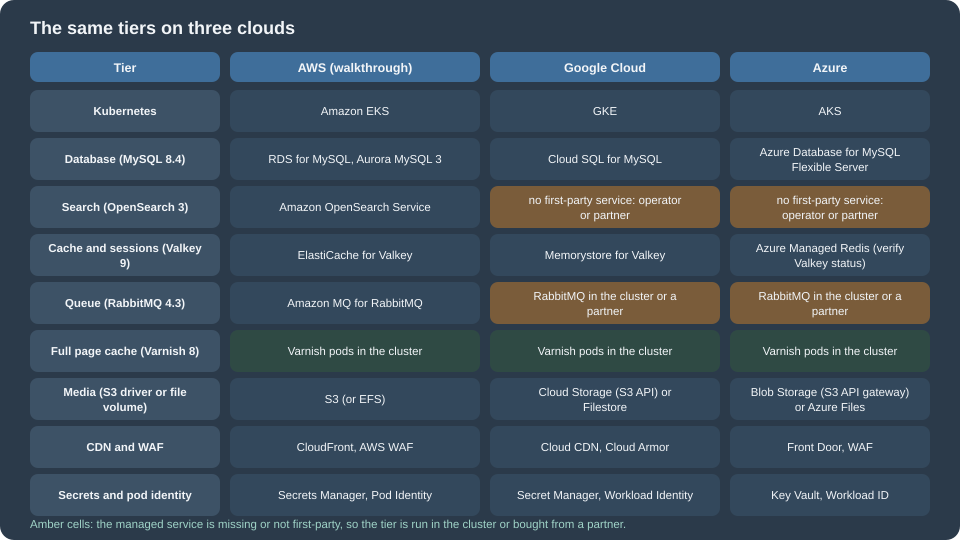

Cloud: Reference Architecture
|
This content was generated with the assistance of AI and should be verified against the official documentation before being relied on in production. |
This page was written against Magento Open Source and Adobe Commerce 2.4.9 (generally available on 2026-05-12) and Mage-OS 3.6.0, with PHP 8.5, MySQL 8.4 (or MariaDB 12.3) on Amazon RDS, OpenSearch 3, Valkey 9, RabbitMQ 4.3, Varnish 8 and Kubernetes 1.36 or 1.37 on Amazon EKS, and checked on 2026-10-29. It is the first of twelve pages on running a Magento shop on a cluster and the map for the other eleven. It names no prices: sizes are starting points to measure on your own traffic.
Magento is a PHP application written for a server that holds its own state. It generates code and static files into its own folder,
reads its database password and encryption key from app/etc/env.php, keeps media in pub/media, starts its queue consumers from
cron, and talks to four other services (database, search engine, cache and queue) that a single-server installation runs on the same
machine. Caching, Indexing and Performance tunes that one server,
Installation installs it, and CLI, Cron and Message Queues
explains the cron and consumers. This page and the next eleven take the same shop to a public cloud: which managed service replaces each part of
the single server, where each piece of state goes, and where the details are. The running example is Pocket Coffee, the
fictitious specialty-coffee shop of this section, moving www.pocketcoffee.example from one virtual machine to an Amazon EKS
cluster in eu-west-1. Shared cloud fundamentals are linked, not repeated: VPC Networking,
EKS Clusters, Amazon RDS and the rest of the
AWS section, and for the cluster itself Kubernetes.
The page covers Magento Open Source and Mage-OS, which share one code base, and the self-managed Adobe Commerce on-premises edition. It does not cover Adobe Commerce on cloud infrastructure or Adobe Commerce as a Cloud Service, which are Adobe’s managed offerings; the section "Relation to Adobe Commerce on cloud infrastructure" below says how they differ.
Two architectures

The single server is the architecture of most Magento shops that start small. One machine runs nginx, PHP-FPM, the database, the
search engine, Valkey, RabbitMQ and perhaps Varnish, and the system cron runs bin/magento cron:run. Everything is local, so
everything is fast and simple: one place to back up, one log to read, no network between PHP and the database. Its limit is the
machine. A search engine and a database on the same host compete for memory, a reindex competes with shoppers for CPU, a failed
disk or a bad kernel update takes the shop down during the hours it earns money, and the recovery is a restore from a backup
that is only as fresh as the last copy. Vertical scaling postpones the problem but never removes it. Adobe’s own
requirements page lists the services separately and does not say they must share a host; the layout of
Installation is a development and small-shop layout.
The tiered architecture keeps the same software and moves each kind of state to the place that is built to hold it:
-
The web tier is a set of identical pods (at least two, in different availability zones), each running nginx and php-fpm from one container image. A pod holds no data that another pod or a restart cannot rebuild.
-
A Varnish tier in front of the web pods serves the full page cache. Magento is the origin; Varnish is the cache.
-
The database is a managed primary with a synchronous standby in another zone, reached over TLS by a dedicated user.
-
OpenSearch is a managed domain, because Magento 2.4.9 needs a search engine for every catalog page (see below).
-
Valkey is two managed replication groups, one for the application cache and one for sessions, so that a cache flush never logs anybody out.
-
RabbitMQ is a managed broker; the consumers that read it run as their own Deployments, not inside cron.
-
Media is in S3 through Magento’s remote storage driver (or on a shared file volume), with a CDN in front.
-
Configuration and secrets come from the environment:
app/etc/env.phpis a read-only file that reads environment variables, the values come from a secret store, and the encryption key is a reference that never appears in an image or a repository. -
Scheduled and one-off work is a Kubernetes CronJob (one scheduler), a Job for
setup:upgradethat runs before a rollout, and Jobs for reindexing.
The cost of the tiered design is operating it: a cluster to patch and upgrade every year, five more services to size and watch, a pipeline that builds an image per release. The section "When one server, or another path, is still right" below lists when that is not worth it.
The five services Magento needs
Adobe’s 2.4.9 system requirements list the software the version is tested with: MariaDB 12.3 or MySQL 8.4, OpenSearch 3, Valkey 9, RabbitMQ 4.3 (ActiveMQ Artemis 2 is also listed), Varnish 8 and nginx 1.30. The exact tables, and the older lines, are on Versions, Lifecycle and Requirements; this page states what each service is for and what changes in a cluster.
| Service | What Magento keeps there | Required? | AWS service used in this section |
|---|---|---|---|
MySQL or MariaDB |
Everything transactional and most configuration: catalog, customers, orders, quotes, |
Yes |
RDS for MySQL 8.4, or Aurora MySQL 3 (listed by Adobe, see the next page) |
OpenSearch |
The search index of the catalog ( |
Yes: there is no database search fallback in 2.4 |
|
Valkey (or Redis) |
The default application cache backend, the page cache backend if the built-in full page cache is used, and PHP sessions |
Strongly recommended for any multi-node shop; the default file backends are per node |
|
RabbitMQ |
Message queues: asynchronous operations (bulk API), catalog attribute updates, media image resize and extension queues |
Optional: Magento falls back to MySQL queues ( |
|
Varnish |
The full page cache of the storefront |
Optional: the built-in full page cache works, but is not what Adobe recommends in production |
Pods in the cluster (no managed Varnish exists) |
Read the table with these points:
-
The database is the only place where a mistake loses data. Valkey, OpenSearch, Varnish and the queues can all be rebuilt or lost without losing an order, although a lost queue loses the pending work it held. The database gets the standby, the backups and the dedicated page: Cloud: Managed Database (RDS and Aurora).
-
Search is mandatory. A Magento 2.4 storefront without a reachable search engine cannot render category pages. That makes OpenSearch part of the availability of the shop, not an optional accelerator. Sizing and access are on Cloud: OpenSearch, Valkey and RabbitMQ as Managed Services.
-
Two Valkey groups, not one. The cache and the sessions have opposite needs: the cache may lose keys (eviction, a flush), sessions must not. Separate groups also mean that
cache:flushor a configuration change never touches a customer cart in progress. The built-in full page cache would use Valkey too; with Varnish in front, it does not. See Caching, Indexing and Performance for the settings. -
RabbitMQ is optional, and so is its operator. Magento ships consumers for asynchronous operations, attribute updates and image resizes, and the
dbconnection (the default) stores messages in the database. A cluster still benefits from a broker for two reasons: consumers scale independently of the web tier, and queue depth is a metric an autoscaler can read. The consumers are on Cloud: Cron, Queue Consumers and Indexers. -
Varnish is the one tier with no managed equivalent. The page cache is memory-only and rebuildable, so it runs as pods. It needs one special property: Magento must be able to send a purge request to every replica. See Cloud: Varnish and Full Page Cache on Kubernetes.
-
The split database is not part of the design. Magento deprecated splitting the sales and quote tables into separate databases in 2.4.2, so this section treats it as gone. One database, one primary.
The request path

Following one request for a category page of the shop:
-
The shopper resolves
www.pocketcoffee.exampleto CloudFront. The CDN serves static files from its cache (pub/staticis versioned in its path, so it can be cached for a long time) and, onmedia.pocketcoffee.example, the media in S3. HTML always goes to the origin. The cache rules and the media host are on Cloud: Media and Remote Storage. -
The load balancer (an Application Load Balancer created by the AWS Load Balancer Controller or a Gateway, with an AWS WAF web ACL) terminates TLS and adds
X-Forwarded-ProtoandX-Forwarded-For. Magento must be told that it is behind a TLS-terminating proxy: the setting "Offloader header" (web/secure/offloader_header, the header that signals HTTPS,X-Forwarded-Protohere) tells it which request header to trust, otherwise it can generatehttp://links and loop on redirects. The setting is on Cloud: Varnish and Full Page Cache on Kubernetes and in the Helm chart of Cloud: EKS Infrastructure and Helm Deployment. -
Storefront requests go to the Varnish Service. Varnish answers a hit from memory without touching PHP, and forwards a miss to the
pocketcoffee-webService. The VCL that Magento generates (bin/magento varnish:vcl:generate) decides what is cacheable and what is passed. -
A request for the admin (
/admin_pocketcoffee, thebackend.frontNameof this shop) is routed by the load balancer directly to the web pods or to an optional admin Deployment of the same image, bypassing Varnish: admin pages are never cached, and sending them through the cache only adds a hop and a place for a login redirect to go wrong. Routing by path at the load balancer is what keeps this simple; sending the admin through Varnish and telling the VCL to pass it also works, but adds a hop. -
nginx in the pod serves the files that are in the image and hands PHP requests to php-fpm over FastCGI on the pod’s loopback address. Two containers in one pod keep the pair together and let them scale as a unit.
-
PHP runs Magento. It reads its configuration (database, cache, session, queue, search, remote storage) from
app/etc/env.phpandapp/etc/config.php, asks Valkey for cached configuration and layout, reads the session from the session Valkey group, queries RDS and OpenSearch, and publishes asynchronous work to RabbitMQ. -
When an administrator or an import changes a product, the pod sends a purge (a
PURGErequest, with a tag header for the tag-based invalidation) to every Varnish host listed in thehttp_cache_hostssetting. The purge does not go through the load balancer. A purge that reaches only one of two Varnish replicas leaves stale pages in the other, which is the main reason Varnish runs as a StatefulSet in this section: it gives each replica a stable DNS name that can be listed. -
The response goes back through Varnish (which stores it if it is cacheable), the load balancer and the CDN.
The health check is a separate path: the load balancer and Kubernetes ask pub/health_check.php, which Magento ships and which
tests the connections to the database and the cache backends (verify what your version checks; the search engine is not part of what this page relies on). A static file served by nginx is the
safer liveness probe, because a database outage should make pods unready, not restart them. The probes are on
Cloud: EKS Infrastructure and Helm Deployment.
Where each piece of Magento state goes

On one server Magento keeps state in many places and nothing lists them. Moving to a cluster is mostly the work of finding every one and deciding where it goes. This table is the checklist for the whole section; the rows that need a procedure are completed on the page named in the last column. "Per pod" means that each pod keeps its own copy and loses it with the pod, which is correct for caches and temporary files and wrong for anything else.
| State | On one server | In the tiered design | Page |
|---|---|---|---|
Code: |
Installed by Composer on the server, changed by deployments |
Inside the container image, built once in a pipeline and deployed read-only. No Composer, no Marketplace keys and no code changes on a running pod |
|
Generated code: |
Produced by |
Baked into the image by |
|
Static files: |
Deployed by |
Deployed at build for every theme and locale the shop uses, baked into the image, and served with versioned paths |
|
Shared configuration: |
The modules list, scopes, themes and system configuration that is not environment-specific, written by the installer and by |
Committed to the repository and baked into the image. Admin changes to dumped paths are locked on production |
|
Environment configuration: |
A file written by |
A read-only file mounted from a ConfigMap that reads every value with |
|
Encryption key: |
In |
Created once, stored in Secrets Manager, identical on every pod and across every release. Never generated by a replica |
|
Database content |
MySQL or MariaDB on the same host |
A managed database with a standby: RDS or Aurora, reached over TLS by an application user and a separate migration user |
|
Media: |
The shop folder on the local disk; product images, CMS images, the resized image cache under |
Remote storage in S3 with a CDN in front, or a shared EFS volume. Both are covered, with the paths that stay local |
|
Application cache |
The |
A Valkey group dedicated to the cache. Never on a pod’s disk, so that a flush from the admin reaches every pod |
|
Sessions |
Files in |
A second Valkey group, with persistence and a replica |
|
Full page cache |
The built-in cache (files, database or Valkey) or Varnish on the same host |
Varnish pods in the cluster, purged by Magento from every web pod to every Varnish replica |
|
Search index |
OpenSearch on the same host |
A managed OpenSearch domain, with an index prefix per environment |
|
Index tables and changelogs |
In the database; indexers set to "Update on Save" or "Update by Schedule" |
Same database. "Update by Schedule" in production, with the reindex run by cron and Jobs, never from a web request |
|
Message queues |
MySQL tables or RabbitMQ on the same host |
Amazon MQ for RabbitMQ; the consumers are Deployments that start with |
|
Scheduled work |
System cron running |
One Kubernetes CronJob with |
|
Locks |
The |
The |
|
Schema upgrades |
|
A Job that runs before the rollout, gated by |
|
Temporary and generated files: |
Cache, logs, reports, import and export files, view preprocessing, the maintenance flag |
Per pod, on an |
|
Logs: |
|
Standard output and standard error of the containers, collected by the cluster |
|
Sitemaps, feeds and files written by cron |
Files under |
Written by the CronJob pod, which is gone afterwards: point the output at remote storage or a shared path, or serve it another way. Verify per module |
|
Outgoing email |
The server’s mail transport, or SMTP |
An email service through SMTP; pods do not run a mail server |
|
TLS certificates |
Let’s Encrypt or a purchased certificate on the server |
Certificates managed by the cloud (ACM) on the load balancer and the CDN |
|
Backups |
Scripts on the server |
Database snapshots and point-in-time recovery, OpenSearch snapshots (the index can also be rebuilt), the media bucket versioning, the image registry and the infrastructure code |
Five rows deserve a sentence more.
Environment configuration is the row people forget. env.php is written by setup:install for one server and mixes things that
differ per environment (hosts, passwords, the crypt/key) with things that do not (the admin frontName, the cache backend
class). Adobe documents a second mechanism: an operating system variable named MAGENTO_DC_ plus the path of the setting joined
with a double underscore (for example MAGENTO_DC_SESSION__SAVE for the session/save setting), and a variable MAGENTO_DC__OVERRIDE
that holds a JSON document replacing whole sections. The page that describes it states the precedence between the variables and
env.php in a way that needs checking against your version, so this section does not depend on it: the env.php of the Helm
chart is a template that calls getenv(), which is deterministic and visible in one file.
The crypt/key is the key that Magento uses to encrypt payment tokens, API credentials stored in core_config_data, and the
admin user data that is encrypted. A pod that starts with a freshly generated key cannot read what another pod wrote, and a database
restored under a different key has unreadable encrypted values. In a cluster the key is a secret that exists before the first pod
does. It is a reference in every listing of this section (MAGENTO_CRYPT_KEY read from the Kubernetes Secret), never a value.
Locks surprise people who think of locks as a performance detail. Magento uses a lock provider for cron jobs, indexers and other
operations that must not run twice. Adobe documents three providers (db, zookeeper and file), with db as the default and
Zookeeper recommended for multi-node setups; on Adobe’s own cloud the production and staging environments use file and cannot
change it, which is correct for a managed environment where the file system is shared by design. In a cluster whose pods each
have their own disk, the file provider locks nothing across pods, and the db provider, which uses the shared database, does. The page that
sets this up is the cron page.
The var/ directory is the place where "per pod" is both right and wrong. Right for the caches that Magento can rebuild, the
var/report crash reports and the temporary files of a request. Wrong for the import and export files, the backup files an
administrator creates, and the maintenance flag var/.maintenance.flag: a flag created on one pod puts only that pod in maintenance mode, so a
cluster handles maintenance at the load balancer or with a release gate instead. The pods in the Helm chart of this section
mount var/ as an emptyDir; a feature that writes there and expects the file to be read by another pod is a bug to find
before production.
Files written by cron are the least obvious row. Magento’s sitemap generation, some feed and export modules and any third-party
module that writes under pub/ (a PDF cache, a product feed) work on one server because the file is where the next request
looks for it. In a cluster the CronJob pod writes it and is deleted. The default pub/media is handled by the media page; for the
others, check where the module writes and whether the path can be a remote storage location or a shared volume. This is
checked per module, not in general, and is listed as a verification step in the next section’s script.
An inventory of one server
Before moving anything, list the state of the server that exists. The script below is read-only: it prints names, types and
sizes, never a password or a key. It uses bin/magento commands that exist in 2.4.9 and the php binary, and it is meant to be
run on the old server by the person who runs the migration.
#!/usr/bin/env bash
# Read-only inventory of the state of a single-server Magento installation.
# Run from the Magento root as the file system owner. Prints no secret values.
set -euo pipefail
root="${1:-.}"
cd "$root"
echo "== Mode and version"
bin/magento deploy:mode:show
bin/magento --version
echo "== Top-level nodes of app/etc/env.php (names only)"
# shellcheck disable=SC2016 # the PHP code is meant to stay unexpanded
php -r '$e = include "app/etc/env.php"; echo implode(PHP_EOL, array_keys($e)), PHP_EOL;'
echo "== Services configured in env.php (types and hosts only)"
# shellcheck disable=SC2016
php -r '
$e = include "app/etc/env.php";
$db = $e["db"]["connection"]["default"] ?? [];
echo "db host: ", $db["host"] ?? "-", PHP_EOL;
echo "session save: ", $e["session"]["save"] ?? "files", PHP_EOL;
echo "cache frontends: ", implode(",", array_keys($e["cache"]["frontend"] ?? [])) ?: "-", PHP_EOL;
echo "queue default connection: ", $e["queue"]["default_connection"] ?? "db", PHP_EOL;
echo "lock provider: ", $e["lock"]["provider"] ?? "db (default)", PHP_EOL;
echo "remote storage: ", $e["remote_storage"]["driver"] ?? "file (local)", PHP_EOL;
echo "http_cache_hosts: ", count($e["http_cache_hosts"] ?? []), PHP_EOL;
'
echo "== Full page cache application (1 built-in, 2 Varnish)"
bin/magento config:show system/full_page_cache/caching_application || true
echo "== Search engine"
bin/magento config:show catalog/search/engine || true
echo "== Indexer modes and cache status"
bin/magento indexer:status
bin/magento cache:status
echo "== Consumers defined"
bin/magento queue:consumers:list
echo "== Writable state on this disk (sizes)"
du -sh pub/media var generated pub/static 2>/dev/null || true
find var -mindepth 1 -maxdepth 1 | head -n 40The output answers the questions of this page: which services the server really uses (a files session save handler and a db
queue connection mean that two of the five services are not in use yet), whether the full page cache is Varnish, whether
remote storage is configured, how large pub/media and var/ are, and which consumers exist. The
Cloud: Migrating from a Single Server page uses the result as the checklist of
what to move.
The tiers on three clouds

The architecture does not depend on one provider. Each tier has a managed equivalent on the three large clouds, with two exceptions called out below. The walkthroughs of the next pages use AWS; Cloud: Google Cloud, Azure and Alternatives gives the differing commands.
| Tier | AWS | Google Cloud | Azure |
|---|---|---|---|
Managed Kubernetes |
Amazon EKS (Auto Mode, or managed node groups with Karpenter) |
GKE (Autopilot or Standard) |
|
Container registry |
|||
Load balancer and edge routing |
Application Load Balancer through the AWS Load Balancer Controller |
||
CDN |
|||
Web application firewall |
AWS WAF |
Cloud Armor |
Web Application Firewall on Front Door or Application Gateway |
DNS and certificates |
Azure DNS and managed certificates |
||
Managed database |
RDS for MySQL 8.4 or MariaDB 12.3, Aurora MySQL 3 |
Azure Database for MySQL Flexible Server. Azure Database for MariaDB was retired on 2025-09-19 |
|
Search (OpenSearch 3) |
No first-party OpenSearch service: run OpenSearch in the cluster with an operator, or use a partner service |
No first-party OpenSearch service: the same two options. Azure offers Elastic as a Marketplace partner service, which is Elasticsearch, not OpenSearch |
|
Cache and sessions |
Memorystore (Memorystore for Valkey) |
Azure Managed Redis. Adobe lists Valkey 9, not Redis, for 2.4.9: verify the combination with Adobe before choosing it |
|
Queue (RabbitMQ) |
No managed RabbitMQ: run RabbitMQ in the cluster with an operator or use a partner service. Pub/Sub is not an AMQP broker |
No managed RabbitMQ: the same two options. Service Bus supports AMQP 1.0, while Magento connects with an AMQP 0-9-1 client library (verify), so it is not a drop-in replacement |
|
Media |
Cloud Storage has an S3-compatible API (interoperability); Filestore for a file volume |
Blob Storage has no S3 API, so the S3 driver needs a gateway; Azure Files (NFS) for a file volume |
|
Full page cache |
Varnish in the cluster |
Varnish in the cluster |
Varnish in the cluster |
Secrets |
|||
Identity for pods |
EKS Pod Identity or IAM roles for service accounts |
Workload Identity Federation for GKE |
Microsoft Entra Workload ID |
Logs and metrics |
|||
Infrastructure as code |
Three rows decide whether a cloud suits Magento, and they differ from the WordPress and PrestaShop mappings. First, search: only AWS has a
first-party managed OpenSearch, and OpenSearch is mandatory, so on Google Cloud and Azure a self-run or partner search service is a
required part of the design, with the operations that implies. Second, the queue: RabbitMQ has a first-party managed
service only on AWS, and the cloud-native messaging services do not speak the protocol Magento’s amqp connection uses. Third,
media: the S3 driver needs an S3 API, which Google Cloud offers through an interoperability mode and Azure does not. The three
rows are where the "other clouds" page spends its words, and the result is a decision table, not an equivalence.
The Kubernetes layer has its own section, Kubernetes; the cloud pages above cover the managed services. The Magento-specific parts that no cloud page covers are the other eleven pages here.
Relation to Adobe Commerce on cloud infrastructure
Adobe Commerce on cloud infrastructure (the PaaS edition, formerly Magento Commerce Cloud) is Adobe’s managed version of the same idea: the same software on tiers, operated by Adobe. The two are easy to confuse, because the vocabulary overlaps. The Editions and Ecosystem page places it among the editions; this section compares the architectures.
| Aspect | Adobe Commerce on cloud infrastructure | This section (self-built on EKS) |
|---|---|---|
Who operates it |
Adobe provisions and runs the environments; you deploy to them with Git |
You operate the cluster, the services and the pipeline |
Edition |
Adobe Commerce only |
Magento Open Source, Mage-OS or Adobe Commerce on-premises |
Edge |
Fastly CDN (a Varnish-based service) is required on Staging and Production; its WAF runs on Production |
CloudFront or another CDN, AWS WAF on the load balancer, and Varnish pods you run |
Web tier |
nginx and PHP-FPM on Adobe-managed hosts or containers |
nginx and php-fpm in your own pods |
Services |
Declared in |
Managed services you create with OpenTofu, referenced from |
Configuration |
|
You own |
Build and deploy |
ece-tools runs the build, deploy and post-deploy stages on a push to the Git branch |
Your pipeline builds an image; a Helm release and a pre-upgrade Job deploy it |
Locks |
The |
The |
Compatibility policy |
Adobe enforces version and dependency deadlines on Cloud environments, with suspension as the penalty |
No enforcement, but Adobe supports only the combinations of its system requirements table, and the lifecycle dates of the versions page still apply |
Local tooling |
|
The container image of this section is the unit you run locally and in the cluster |
Source: Adobe Commerce on cloud infrastructure: Cloud architecture, Configure services and Deploy variables
Four consequences follow for readers of this section.
-
The concepts transfer, the files do not.
services.yaml,.magento.app.yaml,.magento.env.yaml,routes.yamland ece-tools are specific to Adobe’s platform; none of them exists in a self-built cluster. What does transfer is the order of operations (build without a database, then deploy with one), the three phases, and the rule that the production file system is read-only. -
The variable names transfer partly. Adobe’s
.magento.env.yamlhas variables such asCRON_CONSUMERS_RUNNERandCONSUMERS_WAIT_FOR_MAX_MESSAGES, which end as nodes ofenv.php. The nodes themselves (cron_consumers_runner,queue/consumers_wait_for_messages) are plain Magento configuration and are what this section sets. -
The enforcement policy applies to Adobe’s Cloud only. The deadlines of Versions, Lifecycle and Requirements (MariaDB, OpenSearch, Redis to Valkey, RabbitMQ) bind Cloud environments and not self-hosted ones. They are still a good guide to what Adobe tests, and a self-hosted shop that ignores them is outside Adobe’s tested configuration.
-
Adobe Commerce as a Cloud Service is something else. It is a multi-tenant SaaS in which Adobe runs and upgrades everything, including the services in this table, and it does not run on your cluster at all. See Editions and Ecosystem.
A shop already on Adobe Commerce on cloud infrastructure that wants to leave it faces a migration, not an upgrade: the platform
files go, the services have to be created, and the .magento.env.yaml settings have to be translated into env.php. The sibling
page Cloud: Migrating from a Single Server covers the move from a
server; moving from Adobe’s cloud has the same steps for the data and none of the platform ones, and Adobe’s licence and support
terms apply to the decision.
Mage-OS and Adobe Commerce on the same architecture
Mage-OS is a community distribution of the same code base, with its own Composer packages (mage-os/*) and no Marketplace keys for the core.
Nothing in this architecture depends on the distribution: the services are the same, the image is built the same way,. The differences are in the build (the Composer repository and credentials, covered on
Cloud: Container Image and Pipeline Build) and in support: Adobe’s support
for the tested configurations is for Adobe Commerce and Magento Open Source, and Mage-OS has its own community support and its own
tested stack. The platform page of this site, Versions, Lifecycle and Requirements, lists both.
The names used across these pages
The twelve Magento cloud pages use one set of names, so a snippet on one page connects to the others. The shop is the Pocket
Coffee shop of the rest of this section, with the module namespace PocketCoffee_* used in the module pages.
| Item | Name |
|---|---|
Region and account |
|
Site and media hosts |
|
Store views |
|
EKS cluster and namespace |
|
Helm release and chart |
release |
Images |
ECR repositories |
Workloads |
Deployment |
Admin |
|
Database |
RDS instance |
Search |
OpenSearch domain |
Cache and sessions |
ElastiCache for Valkey replication groups |
Queue |
Amazon MQ for RabbitMQ broker |
Media |
S3 bucket |
Secrets |
One Secrets Manager secret |
Infrastructure code |
OpenTofu module in the directory |
Every name is fictitious: there is no such account, cluster or domain, and the .example domain is reserved for documentation.
The exact values keys of the Helm chart are fixed on Cloud: EKS Infrastructure and Helm Deployment.
The end of the Bitnami images
Many older tutorials start a Magento cluster from a Bitnami image, a Bitnami Helm chart, a Bitnami Magento stack on a marketplace image or a Lightsail blueprint, because they came with sensible defaults. That path changed:
-
In August 2025 Broadcom moved the public Bitnami container images to a "Bitnami Legacy" repository that receives no updates, and moved the maintained images to a paid catalogue; new OCI Helm charts stopped being published on Docker Hub.
-
Broadcom’s announcement of 2026-05-20 says that on 2026-06-10 the Bitnami containers on Amazon ECR, the Helm charts, the AMIs on AWS Marketplace and the Lightsail blueprints are removed from AWS. Existing EC2 and Lightsail instances keep running but get no updates after 2026-05-20.
-
Published images and charts are not a safe default for production: nothing guarantees updates, and a Magento shop needs security patches on the application within days.
The consequence for this section: build your own image from Magento or Mage-OS packages (Cloud: Container Image and Pipeline Build), use managed services for the database, the search engine, the cache and the queue instead of in-cluster charts, and treat a Bitnami or Lightsail Magento instance as a system to migrate off, not one to patch. The migration is on Cloud: Migrating from a Single Server. The Bitnami change is a Broadcom commercial decision announced on their sites; verify the current status there before relying on any image.
When one server, or another path, is still right
The tiered architecture is the answer to specific requirements, not a goal. Stay with a single server, a managed Magento host, or Adobe’s own cloud, when:
-
Traffic is modest. A well-tuned single server (Varnish or the built-in full page cache, Valkey, OPcache, OpenSearch with enough memory, a database with enough memory) serves a large catalogue. The tuning of Caching, Indexing and Performance comes first, a database on its own server next, and several web servers last.
-
A few minutes of downtime is acceptable and the backup and the restore are tested. A one-hour recovery objective can be met with snapshots and a rebuild script, with none of the cluster.
-
No team operates Kubernetes. A cluster that nobody understands is less available than a virtual machine that somebody does. Five managed services, a build pipeline that compiles and deploys static content for every theme and locale, and a Kubernetes upgrade every year are the real price.
-
The shop depends on running Composer on the server. Extensions installed by an administrator through the server, or a workflow that patches code in place, fight the immutable image.
-
A managed host or Adobe’s platform fits. A host that runs Magento and its updates, caching, backups and a CDN removes most of the operations; Adobe Commerce on cloud infrastructure removes them for Adobe Commerce licensees and brings the policies described above.
Between the extremes there are middle paths that do not need Kubernetes: a single virtual machine with a managed database and a managed
search engine (the first two steps of the tiered design), an EC2 Auto Scaling group behind a load balancer with Varnish on each node, or
containers on ECS with Fargate. Cloud: Google Cloud, Azure and Alternatives compares them.
A managed database is often the best single step: it removes the failure that is hardest to recover from and changes only the db
node of env.php.
Reading path
-
This page, then Cloud: Managed Database (RDS and Aurora) and Cloud: OpenSearch, Valkey and RabbitMQ as Managed Services: the services.
-
Cloud: Container Image and Pipeline Build and Cloud: Media and Remote Storage: the image and the files.
-
Cloud: Varnish and Full Page Cache on Kubernetes and Cloud: Cron, Queue Consumers and Indexers: the cache tier and the background work.
-
Cloud: EKS Infrastructure and Helm Deployment: the first deployment.
-
Cloud: Releases and Zero-Downtime Deployments and Cloud: Autoscaling, Observability, Backups and Security: running it.
-
Cloud: Migrating from a Single Server to move an existing shop, and Cloud: Google Cloud, Azure and Alternatives for the other choices.
Existing pages that these pages build on, and do not repeat: Installation, Local Development Environments, Upgrades, Security and Declarative Schema and Patches.
Pitfalls
-
Moving the database and nothing else. A managed database fixes the data tier, not the web tier. Two web servers still need shared media, an identical
crypt/key, one cron runner, a shared session store and a shared cache. -
Treating the cluster as a bigger server. Composer installs from the admin, a writable
generated/directory, avar/full of state, per-pod sessions and a cache flush that reaches one pod all break, silently, when the pod is replaced or the next request lands elsewhere. -
One Valkey for everything. A
cache:flushor an eviction under memory pressure that removes sessions logs every customer out and empties carts. -
Forgetting that search is mandatory. A cluster with a healthy database and no reachable OpenSearch renders empty category pages and fails checkout rules that read the index. Search belongs in the health model and the alerts.
-
Purging one Varnish replica. With two replicas and one purge target, half of the shoppers see a deleted product.
-
Letting every pod run cron. Two schedulers run every job twice. One CronJob,
concurrencyPolicy: Forbid. -
Regenerating the
crypt/keyon a new pod. The installer generates a key on a first install. Replicas start from a finished shop and take the key from the secret. -
The file lock provider on pods with separate disks. It locks nothing across pods.
-
Running
setup:upgradefrom every replica. The schema change is one Job before the rollout. -
Confusing this with Adobe Commerce on cloud infrastructure. The platform files and ece-tools do not exist here, and Adobe’s enforcement policy does not apply.
-
Copying a diagram without the cost model. A tier that is not needed is still operated, patched and paid for.